11/3 최종 도면 치수와 11/2 현장 미팅 내용으로 그렸습니다. 파란 글씨는 도면에 적힌 값, 빨간 글씨는 확인할 것입니다. 건축위 · 인테리어 업체와 맞춰 본 뒤 확정합니다.
0. 한눈에 보기 — 공간 · 기물 치수표벽 · 정면 · 바 · 간이주방 · 창고 치수와 기물(가로×깊이×높이) · 확인할 것 — 그림 1~14의 기준JPG 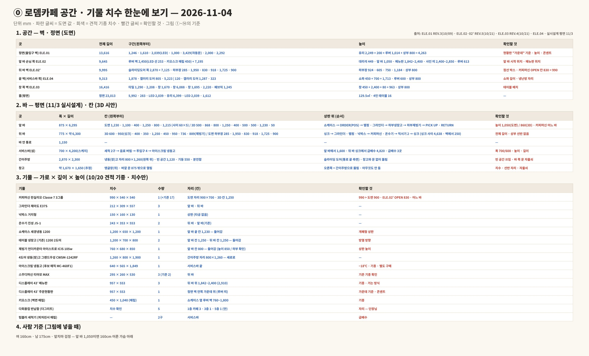
확인할 것 커피머신 990이 도면 자리 900 · 뒤 바 OPEN 칸 830보다 넓음 · 상판 높이 1,050/924(도면) vs 860(3D) · 커피머신 어느 바
1. 홀 전체위에서 본 모습 · 뒤 바 775 · 통로 1,150 · 앞 바 875 · 서비스바 4,200×700 (앞 바에서 1,600) · 간이주방 · 창고JPG 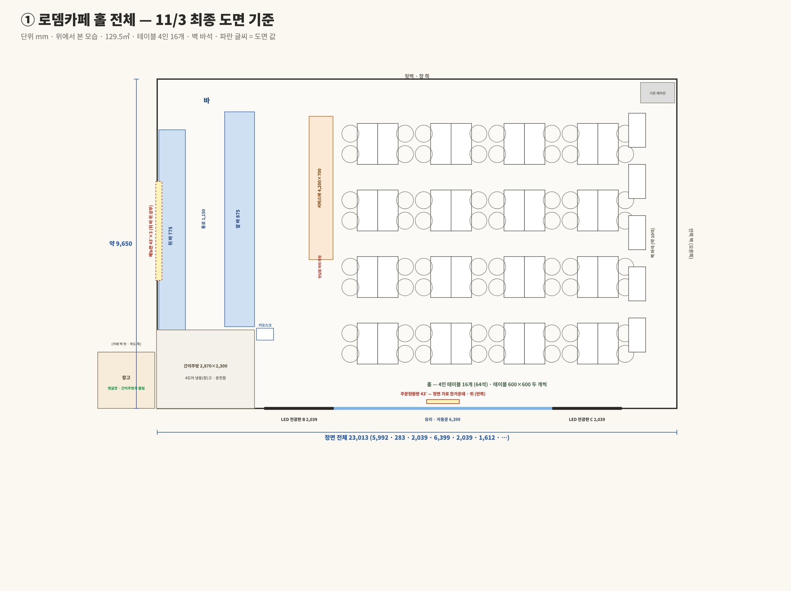
확인할 것 메뉴판 3대는 뒤 바 위, 현황판은 정면 가운데 위 · 반납함 · 키오스크 자리 확인
2. 앞 바 — 손님이 보는 모습 (도면 ELE.02)9,645 = 루버 벽 2,450 + 7,195(쇼케이스 1,230 · 루버 바 · 900) · 앞 바 1,050 · 사인 띠 450 · 메뉴판 970×558 (1,842~2,400) · 키오스크 매립 450JPG 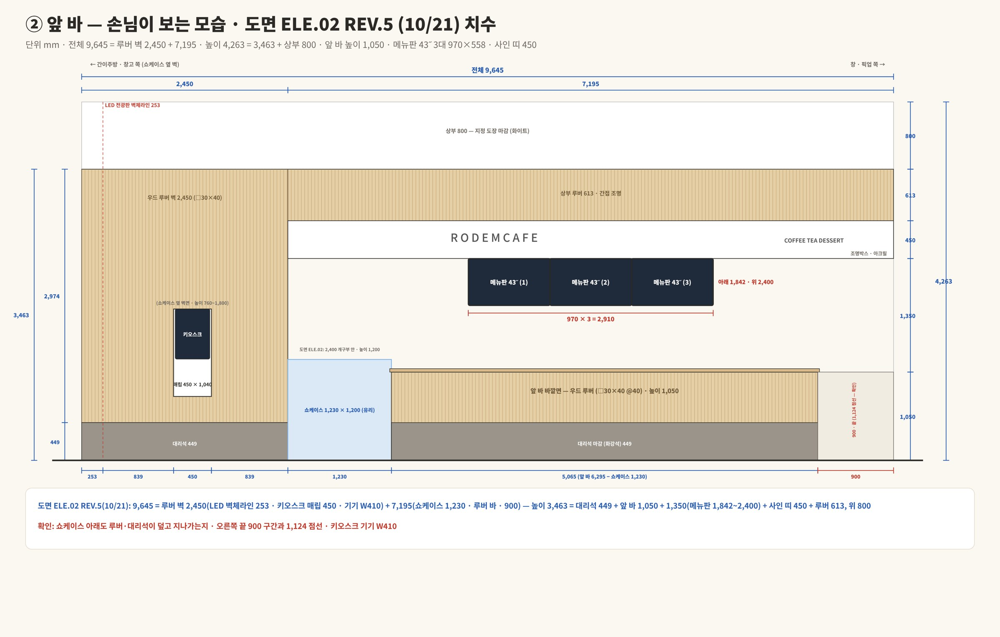
확인할 것 쇼케이스 아래도 루버·대리석이 덮고 지나가는지 · 오른쪽 끝 900 · 1,124 점선 · 키오스크 기기 W410
3. 카페 안에서 본 정면 · 주문현황판 (도면 ELE.01)13,616 × 4,263 · 유리 2,249 + 200 + 루버 1,014 + 상부 800 · 자동문 3,369 · 현황판 43˝ 안쪽 가운데 위JPG 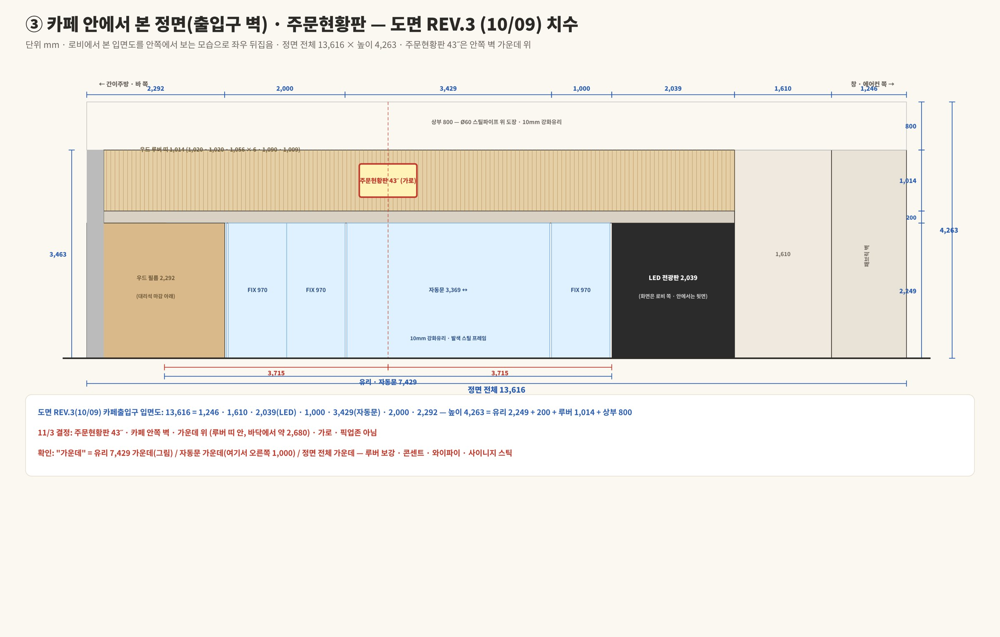
확인할 것 "가운데"가 유리 7,429 가운데인지 자동문 가운데인지 정면 전체 가운데인지 · 높이 · 콘센트 · 루버 보강
4. 서비스바4,200 × 700 · 세척 2구 → 음료 버림 → 투입구 4개 → 아이스크림 · 앞 바에서 1,600 떨어진 섬JPG 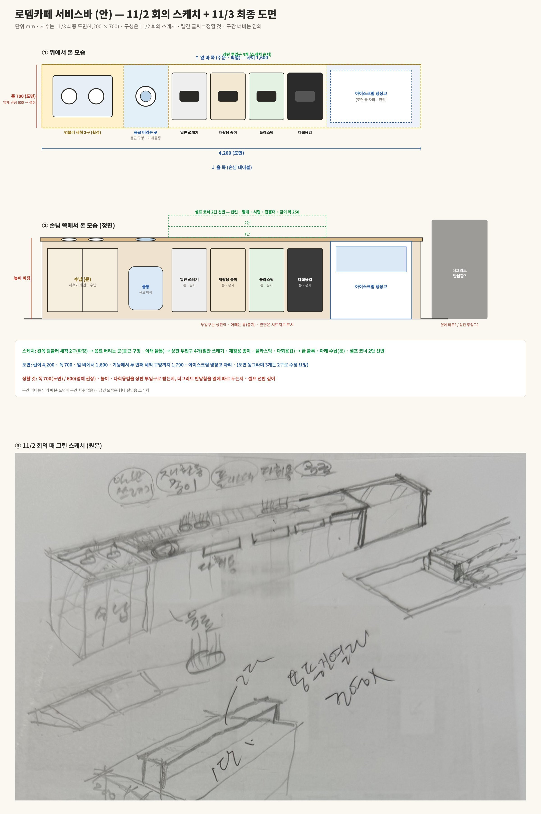
확인할 것 폭 700/600 · 높이 · 다회용컵 투입구 / 반납함 따로 · 선반 깊이
5. 앞 바 · 뒤 바 · 서비스바 평면 (11/3 실시설계)뒤 바 775 (싱크 1,487 · 4,638 · 1,010) · 통로 1,150 · 앞 바 875 × 6,295 · 서비스바 4,200 (1,600 떨어짐) · 급배수 3곳JPG 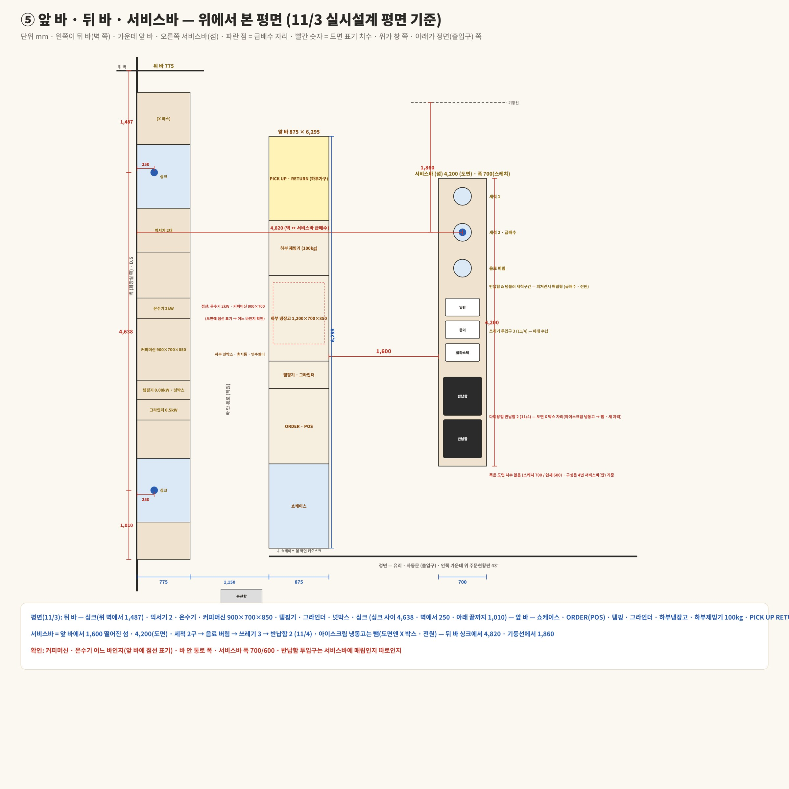
확인할 것 커피머신 · 온수기 어느 바인지(앞 바 점선) · 서비스바 폭 · 반납함 매립 여부
6. 앞 바 (안) — 위에서 본 모습 · 바 안에서 직원이 서서 본 모습875 × 6,295 = 1,230 · 1,100 · 400 · 1,250 · 800 · 1,215 (칸 사이 60×5) · 위에서 본 모습은 손님 기준(왼쪽 쇼케이스) · 직원이 본 모습은 좌우 반대(오른쪽 쇼케이스)JPG 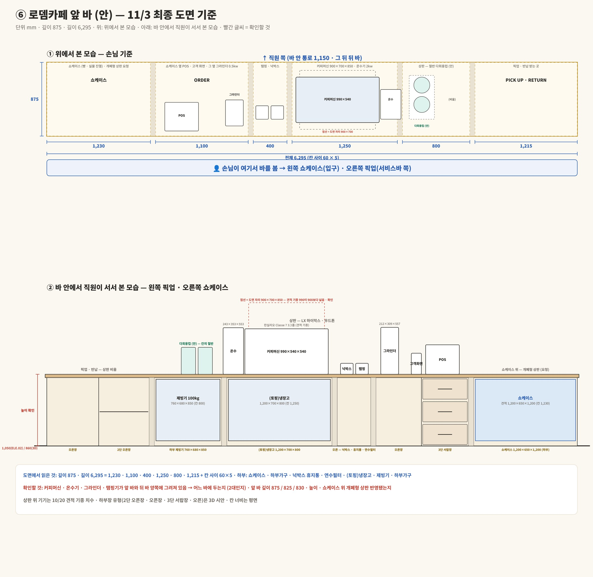
확인할 것 커피머신 · 온수기 · 그라인더 · 탬핑기 어느 바인지 · 앞 바 깊이 875/825/830 · 높이 · 개폐형 상판
7. 뒤 바 (안) — 위에서 본 모습 · 직원이 벽을 보고 선 모습775 · 싱크 ↔ 싱크 4,638 · 싱크 → 그라인더 · 탬핑 · 넉박스 → 커피머신 · 온수기 → 믹서기 2 → 싱크 (칸 너비는 비율로 잰 값 — 실제 칸 치수는 9번 3D)JPG 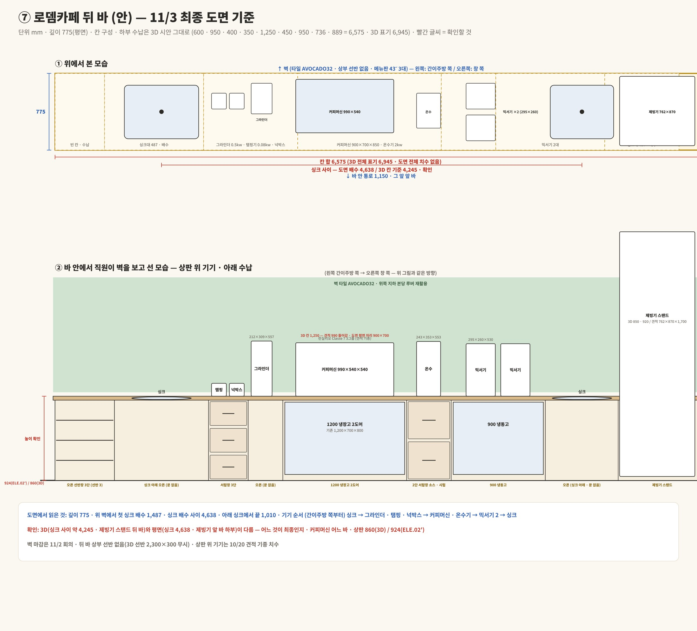
확인할 것 뒤 바 전체 길이 · 커피머신 어느 바인지
8. 뒤 바 — 벽 정면 (도면 ELE.02')9,995 = 2,870 + 7,125 · 하부장 924 (1200 냉장고 · 900 냉동고 · 752 제빙기) · 콘센트 간격 285 · 1,950 · 830 · 918 · 1,725 · 900 · 메뉴판 2,910×558 (상판 위 997) · 슬라이딩도어 2,400JPG 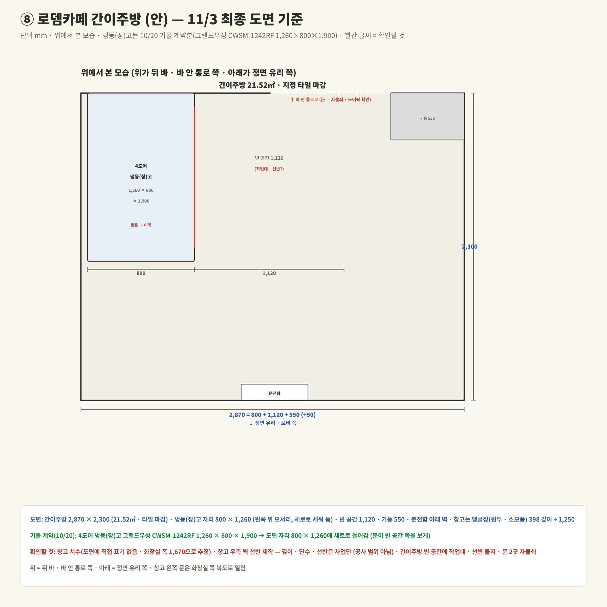
확인할 것 하부장 칸 너비(도면 치수 없음) · 커피머신 자리 · 메뉴판 위치
9. 앞 바 반대편 끝 벽 (도면 ELE.04)9,313 · 붙박이 쇼파 450 + 등받이 700 · 루버 띠 600 · 갤러리 도어 805 · 1,287 (스탠딩 냉난방)JPG 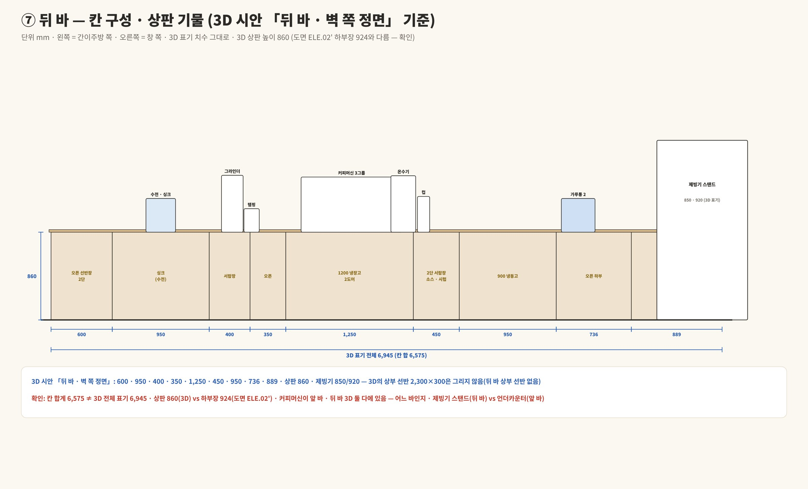
확인할 것 쇼파 길이(도어 자리 제외) · 스탠딩 냉난방 자리
10. 간이주방2,870 × 2,300 = 50 · 냉동고 자리 800×1,250 · 빈 공간 1,120 · 슬라이딩 도어 900 · 기둥 550 바깥 · 창고와 문 없이 뚫림JPG 
확인할 것 냉동고 1,260 vs 자리 1,250 · 빈 공간 쓰임 · 바 쪽 문 자물쇠
11. 창고1,670 × 1,971 (323 · 앵글장 398 · 1,250) · 왼쪽 벽 문 875 밖으로 열림 · 오른쪽은 간이주방으로 뚫림 (아무것도 안 둠)JPG 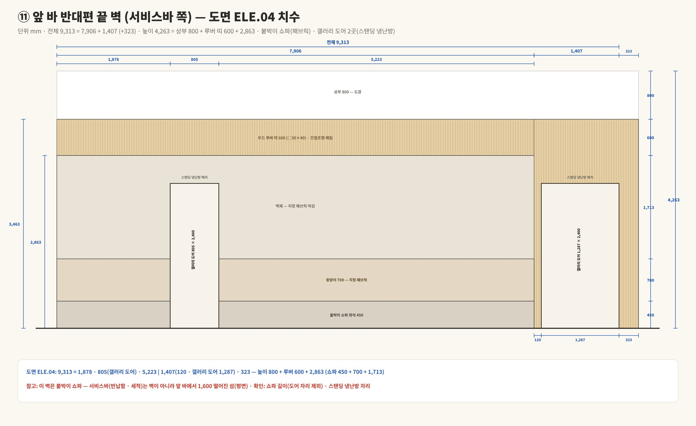
확인할 것 선반 제작은 어디에 · 바깥 문 자물쇠